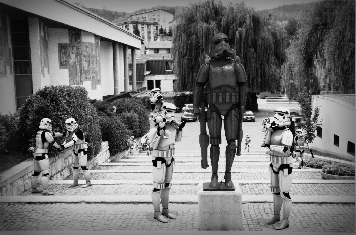
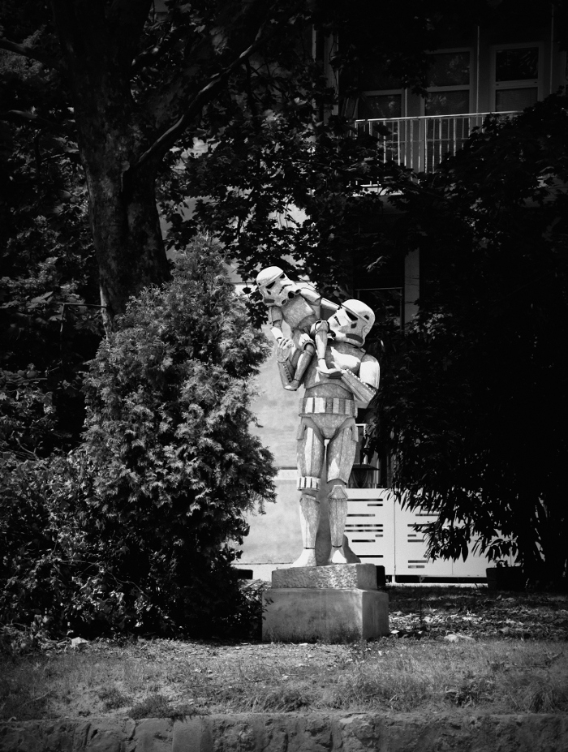
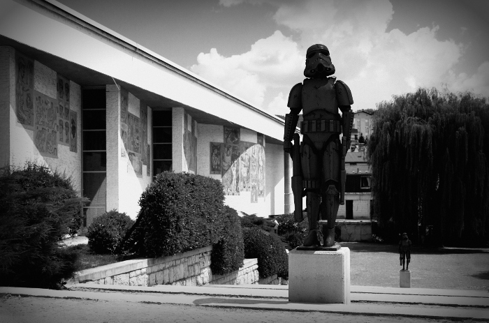
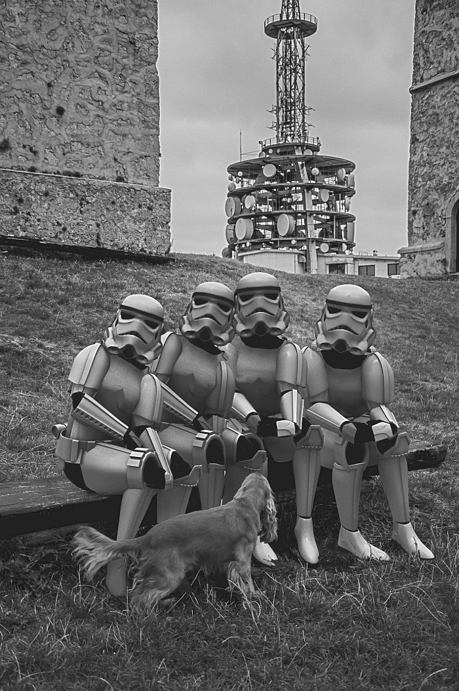
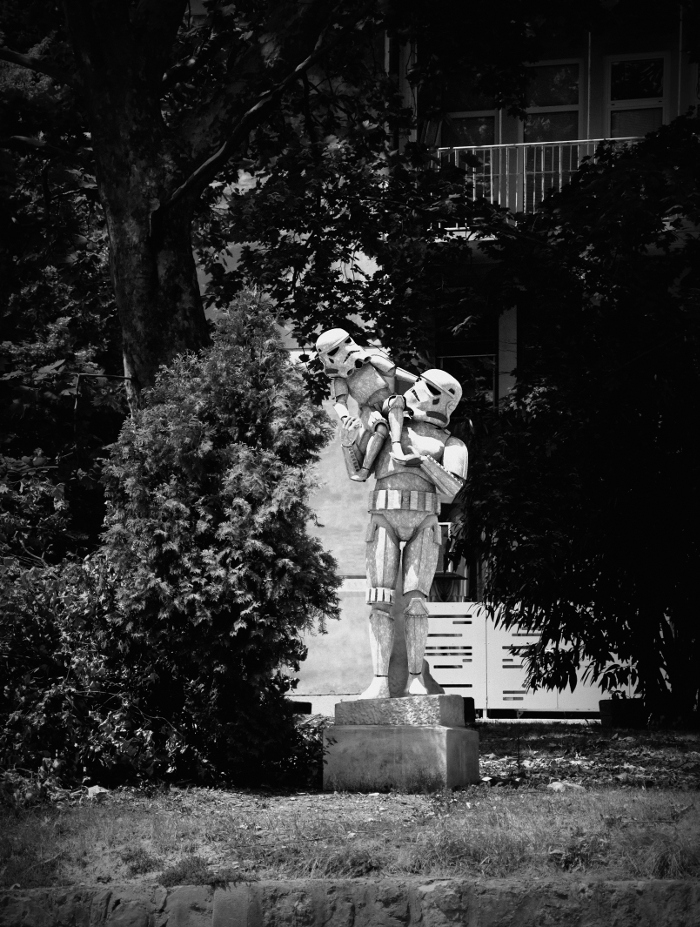
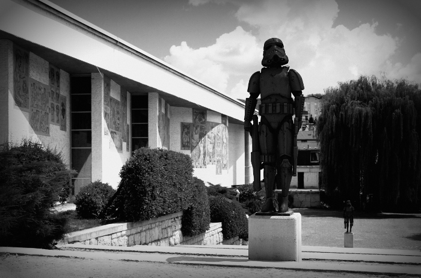
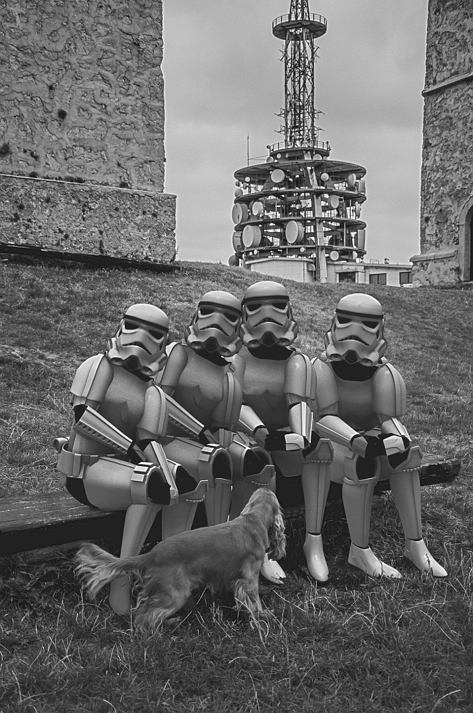

Description:
Troopers Trbovlje" is part of the photography Serie called Troopers. The work combines photographic and synthetic image mostly for creating a particular universe between the reality and the fiction. This serie was developed for the exhibition "Apologists of the new Civilization" which took place in Trbovlje (Slovenia) in October 2013.
Troopers Trbovlje (Mixed media serie)
Images






